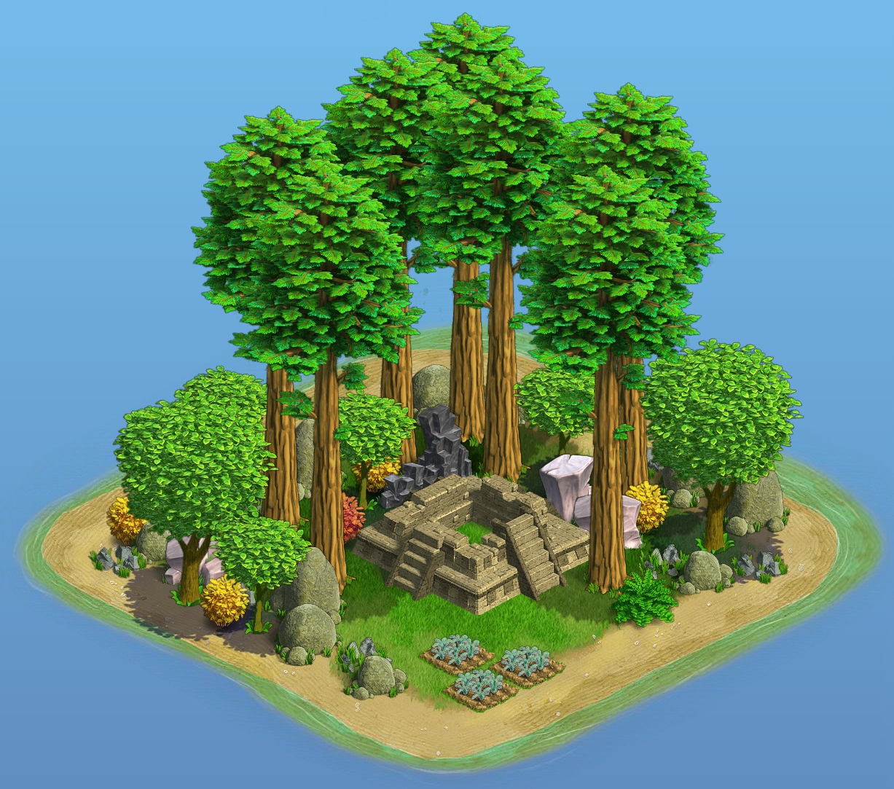

Получено: файл; исходный URL. Скриншот локации; оригинал 1227×1083 px.


Остров Майя
Социальная версия; 09.01.2014- Тип
- Острова
- Версия и дата
- Социальная версия; 09.01.2014
Данные по источнику · Социальная версия · 09.01.2014
Предварительно: ЗомбиСити и ZombieLend содержат совпадающие текст и материалы; не считать независимыми подтверждениями.. Требуется сверка.
- Путь
- С острова Любви через пристань.
- Пристань · стадия 1
- 10 чёрного мрамора, 100 брёвен пальмы, 15 бруса секвойи.
- Пристань · стадия 2
- 1 компас, 100 любви, 15 кварца.
- На острове
- Ресурсы: брёвна, камни, секвойя, белый и чёрный мрамор; на грядках 3 сон-травы.
- Описание и доступ (исторический источник)
- Чтобы попасть на Остров Майя нужно сперва достроить пристань, которая находится на Острове Любви. Открыть Остров Майя - это наверное первая небольшая цель в игре, ведь именно на нем можно провести ритуал и стать человеком. Для этого нужно будет сварить Зомбиум и достроить на этом острове Пирамиду Майя. На грядках Острова майя растет 3 Сонтравы: Сонтрава
Данные по источнику · браузерная игра Зомби Ферма / Зомби Мания; платформа не уточнена · 09.01.2014 — публикация, редакция неизвестна
Предварительно: Статья использует иллюстрации и структуру ЗомбиСити, не считать её независимым подтверждением.. Требуется сверка.
- На острове
- 3 сон-травы; брёвна, камни, секвойя, белый и чёрный мрамор.
- Доступ с острова Любви
- Пристань стадия 1: 10 чёрного мрамора + 100 брёвен пальмы + 15 бруса секвойи, 500 опыта. Стадия 2: 1 компас + 100 любви + 15 кварца, 1000 опыта.
- Ритуал
- Для ритуала стать человеком необходимы зомбиум и достроенная Пирамида Майя.
- Клады под недостроенной пристанью у друзей
- Коллекции Майя и Гипер, металлолом, бесплатные лопаты, опыт и монеты.
- Ограничение
- Автор пишет, что на Майя нет телепортов на другие острова. Это историческое утверждение, не гарантия для других версий.
Данные по источнику · браузерная «Зомби Ферма» / «Зомби Мания»; платформа не уточнена · снимок каталога 10.12.2019; дата редакции неизвестна
Предварительно: Фанатский каталог; возможны общие картинки для разных локаций и зависимость от других источников.. Требуется сверка.
- Каталог
- В разделе «Домашние Острова Зомби Фермы» указана локация «Остров Майя».
- Оговорка
- Каталог показывает название, картинку и ссылку; отдельная статья по этой ссылке не прочитана в рамках этого импорта. Условия доступа и версии требуют проверки.
- Сравнение снимков
- Эта же подпись, раздел и адрес картинки присутствуют в снимке того же каталога 14.09.2018; это не независимое подтверждение.
Связанные сущности
нет проверенных связей — требуется сверка.